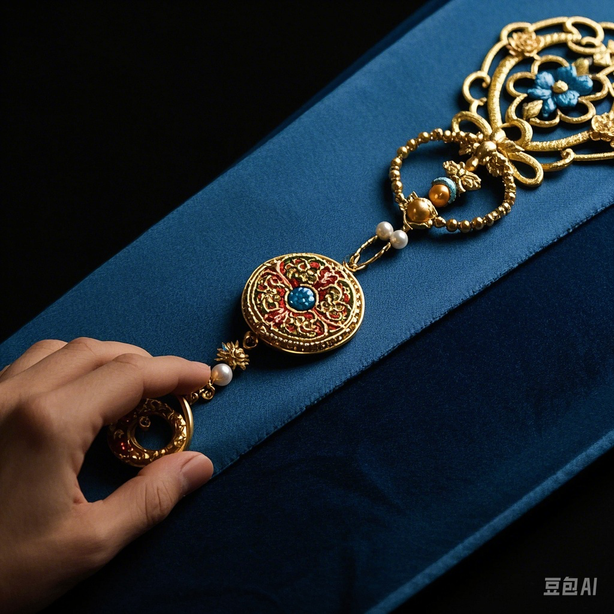
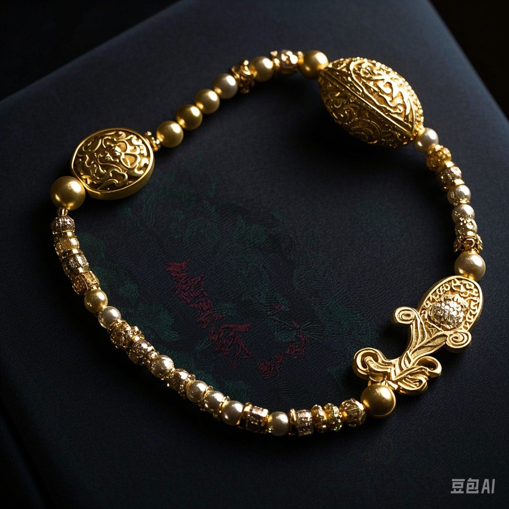

汉末三国：蜀绣与金银珠玉同列
蜀绣的发展基于蜀地富饶，尤其是所产丝帛质好量大。今见蜀绣较早记载出于西汉文学家杨雄，其《蜀都赋》云：“锦布绣望，芒芒兮无幅”，并描述在成都随处可见“挥肱织锦”、“展帛刺绣”的情景，另有扬雄《绣补》诗，诗中表达了作者对蜀绣技艺的高度赞誉。随着蜀地丝织业的发达，蜀绣有了雄厚的基础，所以到西汉末蜀地“女工之业，覆衣天下”(《后汉书》)，名声在外。据文献记载，东汉蜀国最早的君王蚕丛已经懂得养殖桑蚕。汉末三国时，蜀锦蜀绣就已经驰名天下，作为珍稀而昂贵的丝织品，蜀国经常用它交换北方的战马或其他物资。晋常璩《华阳国志》详载蜀地宝物，便将锦绣与金银珠玉同列。
唐代末期，南诏进攻成都，掠夺的对象除了金银、蜀锦、蜀绣，还大量劫掠蜀锦蜀绣工匠，视之为奇珍异物。据《元和郡县志》记载，在唐代，安靖刺绣作为贡品进入宫廷，成为皇帝奖赏功臣的主要物品。五代十国时期，四川相对安定的局面为蜀绣的发展创造了有利的条件，社会需求的不断增大，刺激了蜀绣业的飞速发展。时至宋代，蜀绣之名已遍及神州，文献称蜀绣技法“穷工极巧”，蜀绣的发展达到鼎盛时期，绣品在工艺、产销量和精美程度上都独步天下。

